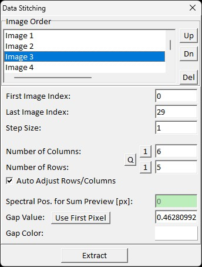
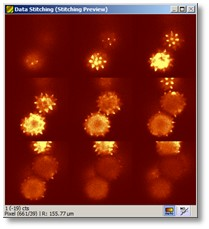

|
描述
图谱与图像数据拼接对话框允许将多个图像并排显示/作为平铺显示在一个更大的图像中。也可以将多个光谱图像数据对象拼接成一个更大的图谱数据对象。如果例如由多个堆叠图像扫描组成的三维数据应使用多变量算法（如聚类分析）进行分析，这很有用。
输入与结果
输入：
所有对象必须具有相同的像素大小。
结果：
一个更大的/拼接的图像或图像光谱数据对象。
用户界面

图像顺序（列表框）
允许您通过简单地选择一个图像，然后按下"上"或"下"来更改图像顺序。您也可以通过按下"删除"从列表中移除一个图像。
第一个图像索引（整数编辑框）：
在此定义第一个图像。如果进行深度堆栈，通常第一个和最后一个图像不显示拉曼信号，因此您可以在拼接图像中隐藏它们。
最后一个图像索引（整数编辑框）：
在此定义最后一个图像。
步长（整数编辑框）：
您可以使用步长跳过图像；例如，如果您想在高分辨率深度堆栈中显示更大的差异。
列数（整数编辑框）：
定义拼接图像的列数。
行数（整数编辑框）：
定义拼接图像的行数。
求和预览的光谱位置（浮点编辑框）：
拼接图像光谱数据对象时，预览显示特定光谱位置的求和图像。更改位置或双击打开监听模式以查看另一个预览图像。
间隙值（整数编辑框）：
如果图像数量不符合平铺数量（行 * 列），将有一个空间隙。间隙值将用于这些空白区域。
使用第一个像素（按钮）：
如果您有图像间隙，使用与图像数据相似的间隙值可能很有用。此按钮使用第一个图像像素值作为间隙值。如果选择的间隙值不是最优的，可能会有图像查看器自动比例的问题，可能难以在拼接图像中看到足够的细节。
间隙颜色（颜色选择器）：
如果使用彩色位图对象进行数据拼接，则可以定义间隙颜色。只需点击画布并在颜色选择器对话框中定义颜色即可。
提取（按钮）：
创建新的拼接数据对象并将其添加到当前项目。
预览窗口

预览图像查看器显示拼接图像——可能具有比真实结果更低的分辨率（以获得更好的预览性能）。如果拼接图像光谱数据对象，预览图像查看器显示所选光谱位置的求和图像。